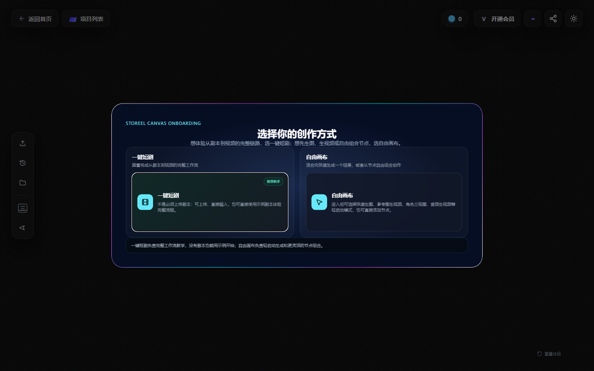

发现产品问题
将“使用起来不顺”拆成入口、信息层级、操作路径与反馈问题，让建议有明确的发生场景。
PRODUCT / PROBLEM · DECISION · EVIDENCE
产品与 AI 工作流
从产品体验中的具体阻力出发，把零散反馈整理成可讨论的问题，再用原型、工作流与文档承接方案。这里展示我如何判断、如何协作，以及成果的真实边界。
01 / SELECTED CASE
StoReel 实习 · 核心案例
围绕 Canvas 新手体验、AIBOT 制作 SOP 与 Skill 迭代，梳理问题发现、方案选择和人机分工。用原始材料区分实际交付、方案原型和后续验证设计。
阅读完整案例 →
将“使用起来不顺”拆成入口、信息层级、操作路径与反馈问题，让建议有明确的发生场景。
把 AIBOT 的制作步骤、输入材料与检查要点整理为 SOP，让经验不只停留在个人操作里。
用 Skill、角色设定与格式要求组织生成过程；同时明确人工判断不能被生成结果替代。
案例内保留证据索引与 PDF。评测方案是复盘补充设计，不等同于已完成的模型评测或线上实验。
02 / RESEARCH NOTES
在历史竞品调研中，我对照了猫箱、破次元恋人、LOFTER 互动内容和 Moodly 等产品材料，关注自由聊天、线性剧情选项与混合交互的区别。
我的关注点不是功能数量，而是用户何时愿意开口、能否影响故事，以及一次对话结束后为何还想继续。
人物关系和情境能否快速说明？开场是否给到可回应的线索？
用户是在选预设答案，还是能表达自己的行动？自由输入之后有无有效回应？
关系与剧情变化是否可感知？内容负担会不会盖过互动本身？
建议按“产品总览 → 体验记录 → StoReel启发汇总”的顺序阅读，比较交互形式，再查看角色进入路径与具体体验。表格中的价格、功能与门槛均属于当时的调研记录，不代表当前版本。
下载原始调研表（Excel） ↓这是历史调研的复盘提炼，不代表当前产品版本，也不是用户研究结论。Character.ai 当时未成功登录体验，不纳入实测结论。
03 / MY APPROACH
谁在什么步骤遇到什么阻力？先把观察与解释分开。
列出替代方案，说明为什么值得改、为什么先改这里。
让原型、规则或文档能被下一位协作者接着使用。
定义什么算改善；证据不足时，保留问题而不是补写成绩。